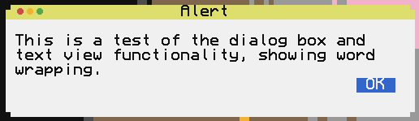

The buttons to display in the window, from left to right.
OptionalcompletionThe function to call when the dialog is closed.
OptionaldefaultThe index of the default button.
The message to display in the window.
The title for the alert window.
Displays the dialog on screen.
Optionalparent: CCWindowThe parent window of the dialog, if available
Staticmessage
A dialog displays a new window on the screen with the specified message.
